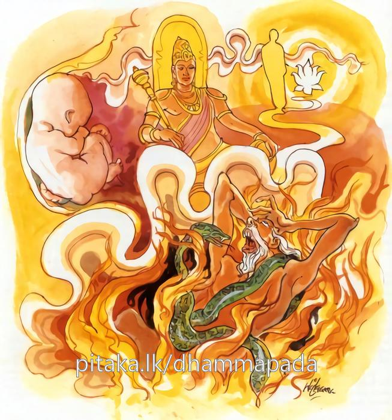

9-10 මැණික්කරු කළ අපරාධය
මෙම කතාව ධම්මපද අටුවාවෙන් ද කියවන්න.
ගබ්භමෙකෙ’පපජ්ජන්ති නිරයං පාපකම්මිනො
සග්ගං සුගතිනො යන්ති පරිනිබ්බන්ති අනාසවා.
සමහර සත්ත්ව කෙනෙක් මවුකුසට උත්පත්ති වශයෙන් පැමිණෙන්නාහ. පව්මක් කළෝ නරකයට උත්පත්ති වශයෙන් පැමිණෙත් පින් කළ හෙයින් සුන්දර ගති ඇති සත්ත්වයෝ දෙව්ලොවට යන්නාහ. ක්ෂය කළ ආස්රව ඇති රහත්හු නිරුපධිශේෂ පරිනිර්වාණධාතුයෙන් පිරිනිවෙන්නාහ.

අප බුදුරජුන් දවස, සැවැත් නුවර මැණික් කපන්නෙක් වාසය කළේ ය. මහණෙක් ඔහුට කුළුපග ව සිටියේ, දොළොස් අවුරුද්දක් එහි ම දන් ගත්තේ ය. මැණික්කරු හා ඔහු අඹුව හා දෙදෙන මහත් ස්නේහයෙන් ඒ මහණහුට මවුපිය තනතුරෙහි සිට උවටැන් කළහ. දවසක් මැණික්කරු තෙමේ තෙරුන් ඉදිරියෙහි මස් කපමින් හුන්නේ ය. ඒ වේලෙහි කොසොල් රජ තෙමේ “සණ ගා පිරිසිදු කොට විද එවාලව” යි වටිනා මැණික් ගලක් ඔහු වෙත එවීය.
මැණික්කරු, ලේ සහිත අතින් ම එය පිළිගෙණ එ තැන ම තුබූ පැහැක් මත තබා, අත සෝදා ගන්නට ගෙට ඇතුල් විය. එකෙණහි ඒ ගෙදර වැඩූ කොස්වාළිහිණියෙක් ලේ ගඳ දැනීමෙන් මස් කැබැල්ලකැ, යි සිතා, පියාඹා අවුත් තෙරුන් බලා සිටියදී ම මැණික ගිල ගත්තේ ය. අත සෝදා පෙරළා එහි පැමිණි මැණික්කරු, මැණික නො දැක, මැණික ගන්නා ලද්දේ කා විසින් දැ, යි අඹුව හා දූපුතුන් අතින් විචාරා “අපි නො ගත්තෙම්හ” යි ඔවුන් කී විට “මැණික ගන්නා ලද්දේ තෙරුන් විසිනැ” යි සිතා මේ රහස අඹුව හා කතා කළේ ය. “හිමිය! එසේ කියනු යුතු නැත, අපි මෙතෙක් උන්වහන්සේගේ කිසිත් වරදක් නො දුටුම්හ, උන්වහන්සේ ගත්හ, යි කීම හොඳ නැත, ඒ වරදය, තව සොයා බැලිය යුතු ය, උන්වහන්සේ මෙය ගත්හ, යි මට නම් නො සිතේ” යි ඈ කී විට, ඔහු තෙරුන්ට ලං ව “ස්වාමීනි! අර පැස උඩ තිබුනු මැණික ඔබ වහන්සේ ගත්තු දැ” යි ඇසී ය.
උන්වහන්සේ, “නො ගත්තෙමි” යි කීවිට “ඔබ හැර අනෙකෙක් දැන් මෙහි නො ආයේ ය, ඔබ හැර අනෙකෙක් මෙහි නැත්තේ ය, මැණික ගත්තහු ඔබ ම ය, ගත්තහු නම්, මා කරදරයෙහි නො ලා, ඔබත් කරදර නො විඳ, මැණික දෙන්නැ” යි මැණික්කරු කී ය.
ස්ථවිරයන් වහන්සේ නිහඬ වූ හ. එවිට ඔහු අඹුට කතාකොට “සොඳුර! මැණික ගත්තෝ තෙරුන් වහන්සේ ම ය, මේ වේලෙහි අනෙකෙක් මෙහි නො ආයේ ය, සොරකමින් ගත්තක්, නැවැත දෙන්නෝ කවුරු ද, මැණික ගත්තෝ මේ උන්නාන්සේ ම ය, එහි සැකයක් නැත, ගහලා බැණලා වත් මැණික ගත යුතු ම ය” යි වැරෙන් කියා සිටියේ ය.
ඕ තොමෝ “හිමිය! ඔයා මේ කියනු කිම, හාමුදුරුවන් ඔය මැණික තබා, ඔයට වැඩිතරම් වූවක් වුව ද ගන්නේ නැත, ඒ ඒකාන්ත ය, මා. නො නසන්න, ඔබත් නො නැසෙන්න, ඔය ගැණ හාමුදුරුවන් විචාරනුවට වඩා, මග බැස යෑම හොඳ ය, හාමුදුරුවන් කෙරෙහි එබඳු දෝෂාරෝපණයක් කිරීම බලගතු වරදකැ” යි කිවූ ය. මැණික්කරු, අඹුව කී කිසිත් නො ගෙන, “අප සියල්ලන් දාසකම් කළත් එය, මැණික තරම් නො අගනේ ය” යි කියා රැහණක් ගෙණ තෙරුන් වෙළා දඬුකඩින් අල්ලා පෙළී ය. තෙරුන්ගේ හිසින් හා නාස්වලින් ලේ ගලන්නට වන. ඇස් ගැල වී පිටත නික්මෙන්නා සේ වි ය.
ස්ථවිර තෙමේ, වේදනාව ඉවසා ගත නො හී, බිම ඇද වැටුනේ ය. ඒ වේලෙහි කොස්වාලිහිණියා ලේ ගඳින් පියාඹා අවුත් ලේ බී ය. මැණික්කරු, කෝපවෙගයෙන් ලිහිණියාට පයින් ගසා හෙළී ය. ඌ එ තැන ම මැරී වැටුනේ ය. ලේ ගලමින් බලවත් වේදනාවෙන් බිම වැටී හුන් ස්ථවිර තෙමේ “උපාසක! මාගේ වෙළුම බුරුල් කොට ලිහිණියා මළේ දැ යි බලන්නැ” යි කී ය. එවිට ඔහු “තෝ ද මැරේව” යි ගුගුලේ ය. “මැණික ගිල්ලේ මේ සතා ය, මූ දැන් මළ නිසා එය කියමි” යි තෙරුන් කී විට මැණික්කරු ලිහිණියාගේ බඩ පළා බලන්නේ මැණික දැක, වෙවුලන්නේ, සංවේගයට පැමිණ, තෙරුන් පාමුල වැටී “ස්වාමීනි! මට කමන්න, ස්වාමීනි! මට කමන්න, මේ ගැන කිසිත් නො දැන, මම මේ අපරාධය කෙළෙමි” යි කියා සිටියේ ය.
එ කල්හි තෙරුන් වහන්සේ, “උපාසක! මේ තාගේ දෝෂයෙක් නො වේ, මා අත දෝෂයෙක් ද නො වේ, මෙය සසර දෝෂයෙක් වේ, මම තට කමන්නෙමි” යි කීහ. මැණික්කරු “ස්වාමීනි! ඔබ වහන්සේ කමන්නහු නම්, පෙර සේ මාගේ ගෙයි භික්ෂාව ගණු මැනැවැ” යි ඉල්ලී ය.
එ කල්හි, ස්ථවිරයන් වහන්සේ “උපාසක! අමුත්තක් නො සිතව, මම මෙතැන් පටන් අනුන්ගේ ගෙයක වහල් පලයක් යටට නො යන්නමි, මේ කරදර ගැහැට හැමෙකක් වන්නේ, අනුන්ගේ ගෙවලට වදින්නහුට ය, මෝඩ මිනිස්සු මහණ උන්නාන්සේ ඔවුන්ගේ දැස්සන් කොට සිතති, මහණ උන්නාන්සේ ජීවත් වන්නෝ කන්නෝ බොන්නෝ අඳින්නෝ පොරවන්නෝ අප නිසාය, යි සිතා සුලු වරදෙහි පවා ගහන්නට බණින්නට තළන්නට සැරසෙති, ඇතැම් මහණහු මහණකම කිමැ, යි නො සිතා, නො දැන, ගිහින්ගේ ගෙට වදිති, උන්ගේ මගුල් අවමගුල් නැටුම් බලිතොවිල් ආදියෙහි කටයුතු සපයති, අනාචාරයෙහි යෙදෙති, උන්ගෙන් යමක් ලැබුමට කූටෝපක්රම කරති, නො මගින් උන්ට පසසති, උන් උසස් කොට දක්වති, විෂමාචාර ඇති මහණුන් නිසා ගිහියා මහණුන් කෙරෙහි කළකිරෙයි, මේ හේතුවෙන් ප්රියශීලී භික්ෂුහු, ගිහින්ගේ ඇණුම් බැණුම්වලට ලක් වෙති, මේ කරුණු නිසා අතපය හයිබල තිබෙනතුරු ගෙයක් ගානේ පිඬු සිඟා ඇවිද ජීවත් වන්නෙමි” යි කියා දුහඟදර ව;
‘මහණට හැම කුලෙන් - ලැබේ ටික ටික ඒ බත,
පිඬු සිඟා යන්නෙම් - ඇත්තේ මෙ මට දඟබල’
යන මේ ගය කීහ.
මේ කරුණෙහිලා හට ගත් සංවේගය ඇති ස්ථවිරයන් වහන්සේ, කල් නො යවා ම පිරිනිවන් පෑහ. මැරී වැටුනු කොස්වාලිහිණියා ද මැණික්කරුගේ අඹුව කුස පිළිසිඳ ගත්තේ ය. මැණික්කරු මැරී ගොස් නිරයෙහි උපන. මැණික්කරුගේ අඹුව තෙරුන් කෙරෙහි පහන් සිත් ඇති ව සිටි බැවින්, කලුරිය කොට දෙව්ලොව උපනි. අනතුරු ව භික්ෂූන් වහන්සේලා බුදුරජුන් වෙතින් උන් උපන් තැන් ඇසූහ. උන්වහන්සේ “මහණෙනි! මේ ලෝකයෙහි ඇතැම්හු මවුගැබ ම උපදිත්, පව් කළ ඇතැම්හු නිරයෙහි, පින් කළහු දෙව්ලොව උපදිත්, ආස්රවරහිතයෝ පිරිනිවී යෙති” යි වදාරා අනුසන්ධි ගළපා මේ ධර්මදේශනාව කළ සේක:
ගබ්භමෙකෙපපජ්ජන්ති නිරයං පාපකම්මිනො,
සග්ගං සුකතිනො යන්ති පරිනිබ්බන්ති අනාසවාති.
සමහර සත්ත්ව කෙනෙක් මවුකුස උපදිත්, පව් කළෝ නිරයෙහි උපදිත්. පින් කළෝ ස්වර්ගයට යෙත්. ආස්රව රහිතයෝ පිරිනිවත්.
ගබ්භංඑකෙඋපපජ්ජන්ති = සමහර කෙනෙක් මවුගැබ උපදිත්.
ගබ්භං එකෙ උපපජ්ජන්ති = යනු පද සිඳීම යි. ගබ්භ ශබ්දය, කුක්ෂියෙහි, කුක්ෂිගත පුත්රයා කෙරෙහි, ඔවරකයෙහි හෙන්නේ ය. ‘යමෙකරත්තිං පඨමං ගබ්භෙ වසති මාණවො’ යන තැන මාතෘකුක්ෂියෙහි, ‘ගබ්භො ච දෙව පතිට්ඨිතො ගබ්භො ච පතිතො ඡමා’ යන තැන කුක්ෂිගත පුත්රයා කෙරෙහි, ‘ගබ්භං පවිට්ඨො’ යන තැන ඔවරකයෙහි හුනුයේ ය. ගෙයක් තුළ ඇති කාමරය ඔවරකැ, යි කියනු ලැබේ. මෙහි ආයේ මවුගැබ කියනු සඳහා ය.
මැරී යන සත්ත්වයන් අතුරෙහි සමහර සත්ත්ව කෙනෙක් මවුගැබ උපදනාහ, යි කී සේ ය.
නිරයං පාපකම්මිනො = පව්කම් ඇත්තෝ නිරයෙහි උපදනාහ.
සග්ගං සුකතිනො යන්ති = පින් ඇත්තෝ ස්වර්ගයට යෙත්.
සුකතී නම් පින් කෙළේ ය. සූකතී යනු සුගති, යි කියූයේ, කියන්නේ, ලියූයේ, ලියන්නේ කකාරය ගකාර බවට නිතර පෙරළෙන බැවිනි. මෙය නිපැදුනේ ‘කර කරණෙ’ යන ධාතුවෙනි. එහෙයින් පළමු කොට සුකතී සිද්ධ විය. පසුව කකාරයට ගකාර ව හ්රස්ව සුගති යි ආයේ ය. මූලාස්ථාව සුකතී යනු ම ය. සුගති, යි ගෙණ ‘මනාගති ඇත්තේ සුගති වේ’ යි අරුත් ගැණීම එතරම් සාර්ත්ථක නොවේ. විමසා ගන්න.
රූපාදී වූ පස්කම් ගුණයෙන් මොනවට උස්ව සිටි තැන, සග්ග නම්. ‘ රූපාදීහි පංචකාමගුණෙහි සුට්ඨු අග්ගොති = සග්ගො’ යනු දන්නේ ය.
පරිනිබ්බන්ති අනාසවා = ආස්රවරහිතයෝ පිරිනිවෙත්.
රහතුන් වහන්සේ ය ආස්රව රහිතයෝ. උන්වහන්සේලා මගපල නුවණින් සියලු ආස්රවයන් නසා සිටියෝ ය. රහතුන් වහන්සේලා උත්පත්ති වශයෙන් කො තැනකත් නො උපදිති.
පරිනිබ්බන්ති, යන මේ ක්රියාපදයෙන් දක්වා වදාළෝ නිරුපධිශේෂපරිනිර්වාණයෙන් රහතුන් වහන්සේලා පිරිනිවෙන බව ය. එකල ස්කන්ධයන්ගේ ඉතිරිවීමෙක් ද නැත. විස්තර කී සේ දන්නේය.
ධර්මදේශනාව අවසානයෙහි බොහෝ දෙන සෝවන් ඵලාදියට පැමිණියාහු ය.
මණිකාරකුලෝපගතිෂ්යස්ථවිර වස්තුව නිමි.